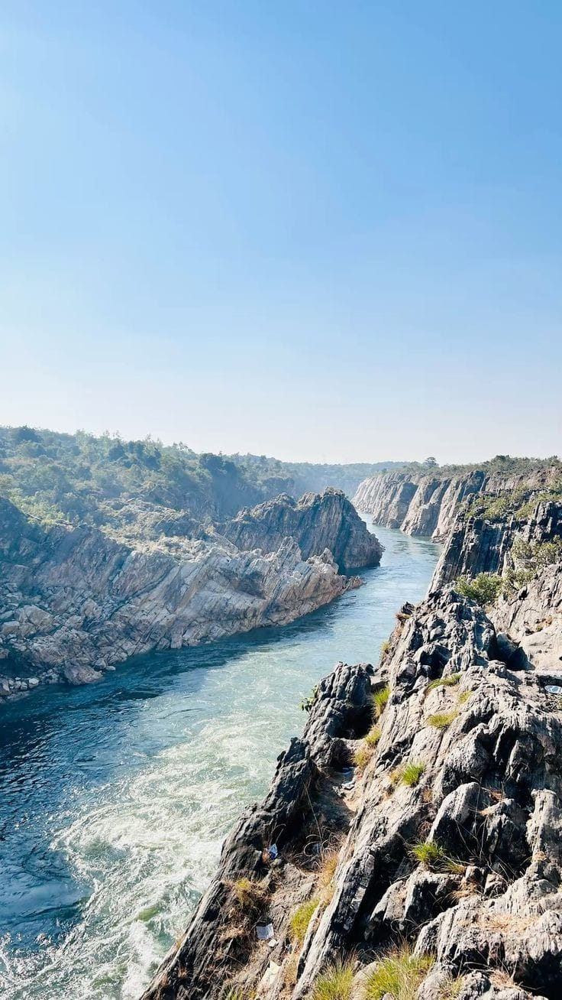
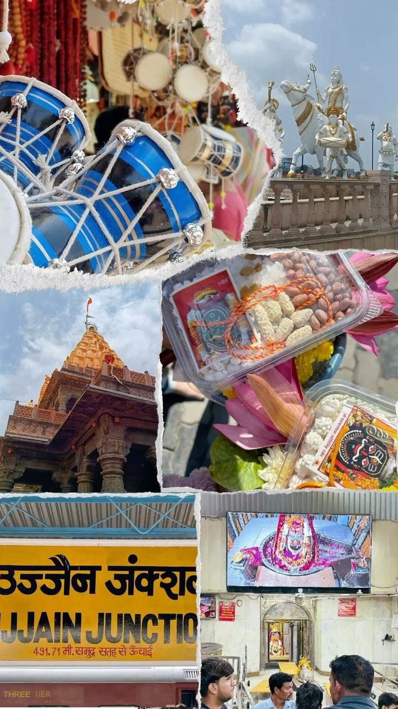
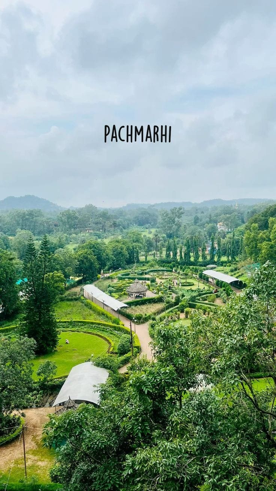
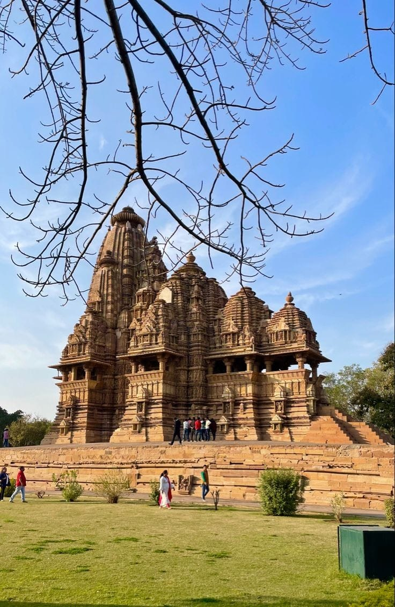
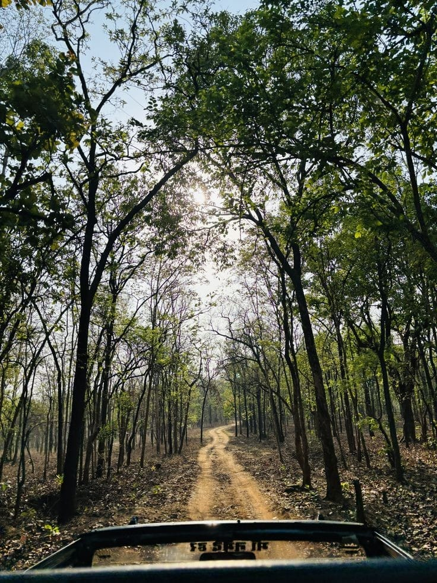

Bhedaghat is known for marble rocks and Dhuandhar waterfall which attracts many tourists. Bhedaghat is a famous tourist spot located about 20-25km from Jabalpur. It is well known for its stunning marble rocks and scenic beauty.

Ujjain is one of the oldest cities of India and famous for Mahakaleshwar Jyotirlinga temple.It situated on the banks of The holy Shpira River.

Pachmarhi is a beautiful hill station known for its greenery, waterfalls and peaceful environment.

Khajuraho is famous historical place known for its beautiful and artistic temple. It is a UNESCO World Heritage Site and it is popular for its unique sculptures and architecure.

Bandhavgarh National Park is one of the most famous national park in India, located in the Umaria district of Madhya Pradesh. It is well known for having a high population of Bengal Tigers and rich biodiversity.